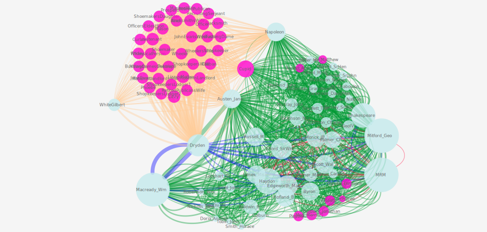

Maintained by: Elisa E. Beshero-Bondar (ebb8 at
pitt.edu)  Last modified:
Last modified:
How many degrees of separation are there between Mary Russell Mitford, Jane Austen, Lord Byron, and the Shelley circle? Which books, periodicals, and works of art does Mitford write about most often in her letters and literary texts, and which titles does she most frequently discuss together? As we compile an XML database of files, working with Mitford’s correspondence and her published texts, we are constructing network analysis plots based on Mitford’s extensive range of contacts and her wide reading. We have plotted the following networks so far from our test-bed selection of Mitford's writings from ca. 1819 - 1825:
- Mitford's Jane Austen and Her First Neighbors
- Books, Periodicals, and Works of Art Mentioned Together in Mitford's Writings
One of our earliest findings of interest is that Jane Austen is but one degree of separation from Lord Byron in Mitford's writings, as we demonstrate in the network graph below.
We begin with a network graph drawn from 70 edited TEI files and our prosopography data, looking at Mitford's references to her contemporary and regional neighbor, Jane Austen in letters and literary texts coded thus far for our archive, dated between 1819 and 1825. The network plot rendered below takes Jane Austen as its central node, and maps all individuals mentioned in the same files with her. These individuals (circular nodes on the graph) are are considered "first neighbors" in the network analysis. Our network analysis is larger than this, but we selected this view as a readable plot to illustrate the referentiality of Mitford's writings. As indicated below, we are plotting references to historical people and fictional characters. Our edge connections on the network (the lines drawn between the circular nodes) are color-coded to indicate the kind of writing in which Jane Austen is mentioned in conjunction with another individual: our plot marks connections made in Mitford's letters from 1819 to 1825 and her literary texts: Jane Austen is referenced (in the opening sketch, alongside naturalist Gilbert White--another regional neighbor from Selborne, Hampshire) in the first edition of Our Village (1824). References in that text are organized in the purple cluster of edges at the bottom of the graph. Click on the graph to view a zoomable and expandable version.

Jane Austen Network Selection (alternative views of the small graph displayed here)
{kind=link}
The network graph above shows a little more detail than the preceding version. This graph indicates people most frequently referenced by giving them a larger node size (with the largest circular nodes representing the individuals with the most connections in the network, or the highest degree centrality). The coral-colored edges indicate connections formed in Mitford's fictional text, Our Village. Deep blue edges represent connections formed in Mitford's Introduction to her Dramatic Works. Written near the end of her life, Mitford reflects back on many people in the theater and art world of the 1820s in that text. Green edges indicate connections formed by mention within Mitford's letters, while the red edges show connections made by mutual mention in Mitford's personal journal of 1819 to 1823. The thickest (most weighted) edges on this graph, as on the preceding, indicate those that are most crucial to holding the network together, or the highest edge-betweenness in the network. These edges connect the nodes mutually referenced in Mitford's fiction, introduction to the Dramatic Works, and Mitford's personal writings.
We plotted this graph in Cytoscape, and the full interactive Cytoscape files are available from our project's Github directory. The following files are available for viewing in Cytoscape:
- Cytoscape file (viewable with download from GitHub, and installation of Cytoscape.)
- Full Cytoscape session view of the entire social network of named historical people and fictional characters referenced in the letters and other writings we have coded so far. This network is drawn from our coded files dating 1819 to 1827, and one outlier text from 1854 (Mitford’s Introduction to her Dramatic Works, which looks back on her early life and her experiences with the London theatre world of the 1820s). This network is very large and unwieldy at the moment for an interactive web view, so we will continue to display excerpts from it on these pages.
From 88 pieces of writing by Mitford between ca. 1819 and 1825, a collection of letters and literary texts, we plotted Mitford's references to titles of published books and periodicals as well as works of art, based on how frequently particular titles are discussed together in the same piece of writing. The co-occurrence network below is plotted according to degrees of connectedness, to prioritize the handful of titles that Mitford references most frequently in conjunction with a vary wide range of other texts. Click on the graph to view a larger version in a separate window:

To view the plot in Cytoscape (free to install), download our dynamic session view and open it in the software.
Here is a filtered plot to highlight the six texts with the highest degree centrality and their first neighbors, a smaller network graph within the larger one plotted above. While the big ring of first neighbors is densely clustered, we can see from this plot helps to illuminate the intensive referentiality of her writing, as well as the titles that seemed to matter the most in her wide reading. Click on the graph to view a larger version in its own window:

To view this plot in Cytoscape, download and open our dynamic session view in the software.
A cautionary note: These networks are preliminary, based on the first 70 - 90 coded XML files with enough data to contribute to the plots. Our coding of Mitford's works is still progressing, and we will update these plots as our project develops. What you see here, though, are the beginnings of what will be a very detailed set of networks. Eventually hope to make our nodes and edges clickable as a way to lead readers into our archive.
As our editing and coding continues, we look forward to integrating network graphics with maps and diagrams to plot and connect the addresses and locations mentioned Mitford’s correspondence. While Franco Moretti has famously plotted circular structures of the walkable region depicted in Mitford’s Our Village, we plan to extend mapping to plot important places in the Mitford archive, and to Mitford’s use of space and place in her poetry, drama, and fiction. Since Mitford's correspondence covers a period of transition in the British postal service, we look forward to producing maps and timelines of England’s postal network and penny post system in the first half of the nineteenth-century, which will complement our guide to reading and coding British postmarks.